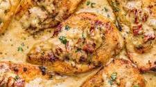

Tuscan Chicken

The call it "Marry Me Chicken" for a good reason.
Ingredients
- Chicken
- Italian Seasoning
- Heavy Cream
- Sun-dried Tomatoes
- Spinach
Steps
- Season chicken with salt and pepper and brown in a skillet.
- Remove chicken from skillet and add sun-dried tomatoes and garlic, sauteeing until fragrant.
- Add heavy cream to the skillet and cook until reduced.
- Add spinach and cook until wilted.
- Serve over pasta.